건축설비기사 (2012-05-20 기출문제)
1과목: 건축일반
1. 오피스 랜드스케이핑(Office landscaping)에 대한 설명으로 옳지 않은 것은?
- 변화하는 작업의 패턴에 따른 조절이 가능하다.
- 공간을 절약할 수 있다.
- 소음에 대한 프라이버시가 확보된다.
- 가구나 조경시설물인 화분, 수목 등을 이용하여 공간을 구성한다.
(정답률: 86%)

2. 한식지붕에 사용되는 부재나 구조의 명칭이 아닌것은?
- 보습장
- 동귀틀
- 단골막이
- 동연
(정답률: 57%)
3. 아파트형식 중에서 계단실형이 복도형보다 유리한 점이 아닌 것은?
- 각 세대의 독립성을 높일 수 있다.
- 건축의 유효면적이 크다.
- 출입이 편리하다.
- 건축비가 저렴하다.
(정답률: 80%)
4. 연립주택의 분류 형태에 속하지 않는 것은?
- 스킵 하우스(Skip House)
- 타운 하우스(Town House)
- 로우 하우스(Row House)
- 파티오 하우스(Patio House)
(정답률: 57%)
5. 다음 중 잔향시간 계산에 필요한 인자가 아닌 것은?
- 실용적
- 실내 전 표면적
- 음원의 음압
- 실의 평균 흡음률
(정답률: 72%)
6. 상점의 평면배치 중 종류별 상품진열이 용이하고 대량판매형식이 가능한 것은?
- 복합 배열형
- 굴절 배열형
- 직선 배열형
- 환상 배열형
(정답률: 82%)
7. 다음 중 인체의 열적 쾌적감에 영향을 미치는 환경 요소에 속하지 않는 것은?
- 기온
- 공기의 청정도
- 기류
- 습도
(정답률: 84%)
8. 다음 빛의 단위 중 광속을 나타내는 것은?
- lux
- candela
- nit
- lumen
(정답률: 69%)
9. 아파트 계획에서 메조넷 형(Maisonette Type)에 대한 설명으로 옳지 않은 것은?
- 주택내의 공간 변화가 있다.
- 엘리베이터 이용상 전용면적의 활용이 비경제적이다.
- 양면 개구부일 경우 일조, 통풍 및 전망이 좋다.
- 소규모 주택에서는 면적면에서 불리하다.
(정답률: 75%)
10. 다음 용어 중 천장 구조와 관계가 먼 것은?
- 달반자
- 행거볼트
- 듀벨
- 캐링 채널
(정답률: 71%)
11. 소규모 건축물에 적용하는 조적식구조에 대한 설명으로 옳지 않는 것은?
- 조적재는 통줄눈이 되지 아니하도록 설계하여야 한다.
- 조적식구조인 각 층의 벽은 편심하중이 작용하지 아니하도록 설계하여야 한다.
- 조적식구조인 내력벽의 기초는 온통기초로 하여야한다.
- 기초벽의 두께는 250mm 이상으로 하여야 한다.
(정답률: 57%)
12. 벽돌쌓기에서 치장줄눈의 깊이의 표준은?
- 4mm
- 6mm
- 12mm
- 15mm
(정답률: 65%)
13. 왕대공 지붕틀에서 압축력과 휨모멘트를 동시에 받는 부재는?
- 왕대공
- ㅅ자보
- 평보
- 중도리
(정답률: 83%)
14. 프리스트레스트 콘크리트구조에 관한 설명 중 옳지 않은 것은?
- 부재의 단면적을 줄여 자중을 경감할 수 있다.
- 시스관을 사용하는 방식은 프리텐션 방식이다.
- 긴장재는 고강도의 강재를 이용한다.
- 대부분의 경우 주요 구조부의 일부에 프리스트레스 를 가하고 나머지는 종래의 철근콘크리트 등과 병용해서 사용한다.
(정답률: 73%)
15. 진동 및 방진대책에 관한 설명으로 옳지 않은 것은?
- 방진고무는 압축용보다 인장용으로 사용하면 더욱 효과적이다.
- 진동차단은 가능한 한 진동원에 가까운 위치에서 감쇠시키는 것이 효과적이다.
- 고체 전파음의 속도는 공기음보다 훨씬 빠르고 멀리까지 전해진다.
- 낮은 진동수의 기계류 방진에는 금속 스프링이나 고무재료가 효과적이다.
(정답률: 81%)
16. 척도조정(Modular Coordination)에 관한 설명으로 옳지 않은 것은?
- 건축 구성재의 대량생산과 생산비용을 낮출 수 있는 이점이 있다.
- 모듈은 등차, 등비 수열을 복합시킬 경우 건축용으로 우수하다.
- M.C화에서 우리나라의 지역성을 기본적으로 고려할 필요는 없다.
- 국제적인 M.C를 사용하면 건축 구성재의 국제교역이 용이해진다.
(정답률: 80%)
17. 서로 다른 음원에서의 음이 중첩되면 합성되어 음은 쌍방의 상황에 따라 강해지거나 약해지는데 이와 같은 현상을 무엇이라 하는가?
- 음의 간섭(interference)
- 음의 반사(reflection)
- 음의 회절(diffraction)
- 음의 굴절(refraction)
(정답률: 80%)
18. 원형 띠철근으로 둘러싸인 압축부재의 축방향 주 철근의 최소 개수는?
- 3개
- 4개
- 6개
- 8개
(정답률: 65%)
19. 자연환기에 대한 설명 중 옳은 것은?
- 실외의 풍속이 적을수록 환기량이 많아진다.
- 실내외의 온도차가 적을수록 환기량은 많아진다.
- 일반적으로 목조주택이 콘크리트조 주택보다 환기량이 적다.
- 한쪽에 큰 창을 두는 것보다 그것의 절반크기의 창 2개를 서로 마주치게 설치하는 것이 환기계획상 유리하다.
(정답률: 77%)
20. 상점의 부지 선정 조건 중 옳지 않은 것은?
- 한 가지 용무만이 아니고 몇 가지 일을 함께 볼 수 있는 곳
- 여러 가지 성질이 다른 매력이 조합되어 있는 곳
- 같은 종류의 상점이 적어서 경쟁력 확보가 쉬운 곳
- 신개발지역으로 특유의 활동변화가 내재된 곳
(정답률: 71%)
2과목: 위생설비
21. 급수배관의 검사 및 시험방법에 해당하지 않는 것은?
- 연기시험
- 만수시험
- 통수시험
- 수압시험
(정답률: 72%)
22. BOD 제거율을 바르게 나타낸 관계식은?
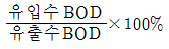
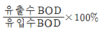
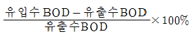
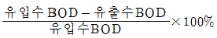
(정답률: 84%)
23. 다음 설명에 알맞은 배수∙통기 배관의 검사 및 시험방법은?
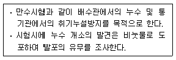
- 통수시험
- 연기시험
- 기압시험
- 박하시험
(정답률: 52%)
24. 길이 30m, 내경 50mm 인 급수관으로 200 L/min의 물을 송수할 경우 마찰손실수두는? (단, 관마찰계수는 0.04)
- 2.04m
- 2.54m
- 3.04m
- 3.54m
(정답률: 46%)
25. 유체에 관한 설명 중 옳지 않은 것은?
- 동점성계수는 점성계수에 비례하고 밀도에 반비례한다.
- 레이놀즈수는 동점성계수 및 관경에 비례하고 밀도에 반비례한다.
- 연속의 법칙에 의하면 관의 단면적이 큰 곳은 유속이 작고, 역으로 단면적이 작은 곳에서는 유속이 크게 된다.
- 베르누이의 정리에 의하면 유체가 가지고 있는 속도 에너지, 위치에너지 및 압력에너지의 총합은 흐름내 어디에서나 일정하다.
(정답률: 59%)
26. 유효면적이 800m2인 사무소 건물에서 한 사람이 하루에 사용하는 급탕량이 10L인 경우, 이 건물에 필요한 급탕량(m3/d)은? (단, 유효면적당 인원은 0.2인/m2 이다.)
- 1.0
- 1.2
- 1.4
- 1.6
(정답률: 77%)
27. 다음 중 간접배수로 해야 하는 기구가 아닌 것은?
- 제빙기
- 세탁기
- 세면기
- 식기세척기
(정답률: 88%)
28. 급수설비에 사용되는 펌프의 양수량이 2000L/min, 전양정이 10m 일 경우, 이 펌프의 축동력은? (단, 펌프의 효율은 60% 이다.)
- 3.52 kW
- 4.27 kW
- 5.45 kW
- 8.32 kW
(정답률: 71%)
29. 배관에 사용되는 각종 신축이음쇠에 관한 설명 중 옳은 것은?
- 스위블형 : 2개 이상의 엘보를 조합한 것으로 신축량이 큰 배관에 주로 사용된다.
- 슬리브형 : 관의 신축을 슬리브의 변형으로 흡수하도록 한 것으로서 곡선배관 부위에도 사용이 용이하다.
- 벨로즈형 : 고압배관에 주로 사용되며 설치 공간을 많이 차지한다.
- 루프형 : 관의 구부림과 관자체의 가요성을 이용해서 배관의 신축을 흡수한다.
(정답률: 59%)
30. 중앙식 급탕방식에 관한 설명으로 옳은 것은?
- 가열기, 배관 등 설비규모가 작다.
- 배관 및 기기로부터의 열손실이 거의 없다.
- 건물 완공 후 급탕개소의 증설이 용이하다.
- 기구의 동시이용률을 고려하여 가열 장치의 총용량을 적게 할 수 있다.
(정답률: 72%)
31. 다음 설명에 알맞은 밸브의 종류는?
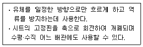
- 리프트형 체크 밸브(lift type check valve)
- 스윙형 체크 밸브(swing type check valve)
- 풋형 체크 밸브(foot type check valve)
- 슬루스 밸브(sluice valve)
(정답률: 82%)
32. 다음의 각종 통기방식에 관한 설명 중 옳지 않은 것은?
- 각개통기방식은 각 기구의 트랩마다 통기관을 설치하는 방식이다.
- 루프통기방식은 2개 이상의 기구트랩에 공통으로 하나의 통기관을 설치하는 방식이다.
- 신정통기방식은 통기수직관을 설치하여야 하며 상부를 연장하여 대기 중에 개구(開口)한다.
- 각개통기방식은 가장 안정도가 높은 방식으로, 자기 사이폰 작용의 방지에도 효과가 있다.
(정답률: 53%)
33. 지름이 D1인 관 A와 지름 D2인 관 B에 동일유량이 흐를 때, 두 관의 지름비 D1/D2 을 유속으로 옳게 표현한 것은?(단, v1은 A관 내의 유속, v2는 B관 내의 유속이다.)
- v2/v1
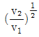
- v1/v2
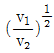
(정답률: 64%)
34. 급탕배관에 관한 설명으로 옳지 않은 것은?
- 중앙식 급탕설비는 원칙적으로 강제순환방식으로 한다.
- 온도변화에 따른 배관의 팽창길이는 배관의 관경에 가장 큰 영향을 받는다.
- 급탕용 밸브나 플랜지 등의 패킹은 내열성 재료를 선택하여 사용한다.
- 관의 신축을 고려하여 건물의 벽관통부분의 배관에는 슬리브를 사용한다.
(정답률: 17%)
35. 옥외소화전설비에서 호스접결구는 소방대상물의 각 부분으로부터 하나의 호스접결구까지의 수평거리가 최대 얼마이하가 되도록 설치하여야 하는가?
- 10m
- 20m
- 30m
- 40m
(정답률: 75%)
36. LNG에 관한 설명으로 옳지 않은 것은?
- 액화천연가스를 의미한다.
- 가스의 비중은 0.65~0.69로서 공기보다 가볍다.
- 액화온도가 -162℃이며, 무색 ㆍ 투명한 액체이다.
- 석유정제과정에서 얻어지는 프로판가스가 주원료이다.
(정답률: 80%)
37. 위생기구의 재질 중 위생도기에 관한 설명으로 옳지 않은 것은?
- 산, 알칼리에 침식된다.
- 강도다 커서 내구력이 있다.
- 오물이 부착되기 어려우며, 청소가 용이하다.
- 복잡한 구조의 것을 일체화하여 제작할 수 있다.
(정답률: 80%)
38. 스프링클러설비의 설치장소가 아파트인 경우, 스프링클러 설비 수원의 저수량 산정시 기준이 되는 스프 링클러헤드의 기준개수는? (단, 폐쇄형 스프링클러헤드를 사용하는 경우)
- 10
- 20
- 30
- 40
(정답률: 73%)
39. 압력탱크방식 급수법에 관한 설명으로 옳은 것은?
- 취급이 비교적 쉽고 고장도 없다.
- 단수시에 일정량의 급수가 가능하다.
- 항상 일정한 수압을 유지할 수 있다.
- 고가탱크방식에 비하여 관리비용이 저렴하고 저양정의 펌프를 사용한다.
(정답률: 65%)
40. 배수관 내 배수의 흐름에 관한 설명 중 옳지 않은 것은?
- 배수수직관의 관경이 작을수록 종국길이는 짧다.
- 일반적으로 배수수직관의 허용유량은 30% 정도를 한도로 하고 있다.
- 배수수직관내를 배수가 관벽에 따라 환상에 가까운 상태로 하강하는 현상을 수력도약현상(도수현상)이라고 한다.
- 배수수평지관으로부터 배수수직관에 배수가 유입하면 배수량이 적을 때에는 배수는 수직관 관벽을 따라 지그재그로 강하한다.
(정답률: 59%)
3과목: 공기조화설비
41. 용량이 386 kW인 터보 냉동기에 순환되는 냉수량은? (단, 냉각기 입구의 냉수온도 12℃, 출구의 냉수온도 6℃ 물의 비열 4.19kJ/kg · K)
- 50.5m3/h
- 55.3m3/h
- 58.9m3/h
- 64.9m3/h
(정답률: 70%)
42. 위치수두 10mAq, 압력수두 30mAq, 속도 2m/s로 관 속을 흐르는 물의 전수두는?
- 13.0m
- 13.2m
- 40.2m
- 42.0m
(정답률: 71%)
43. 환기로 인해 발생하는 외기부하 중 취득잠열계산에 필요한 값은?
- 도입외기량, 외기와 실내공기의 건구온도차
- 도입외기량, 외기와 실내공기의 절대습도차
- 도입외기량, 외기와 실내공기의 상대습도차
- 송풍기의 송풍량, 외기와 실내공기의 엔탈피차
(정답률: 54%)
44. 중앙식 공기조화기에 사용되는 가습장치는 수증기를 만드는 원리에 따라 수분무식, 증기식, 기화식으로 크게 구분할 수 있는데, 다음 중 수분무식에 해당하지않는 것은?
- 원심식
- 회전식
- 초음파식
- 노즐분무식
(정답률: 46%)
45. 다음 설명에 알맞은 취출구의 종류는?
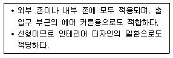
- 노즐(nozzle)형
- 캄 라인(clam line)형
- 아네모스탯(annemostat)형
- 라이트 트로퍼(light troffer)형
(정답률: 72%)
46. 공기정화장치에서 포집효율 70%의 필터를 통과한 공기의 먼지농도는 포집효율 90%의 필터를 통과한 공기의 먼지 농도의 몇 배인가? (단, 각각의 필터 상류의 먼지 농도는 같다.)
- 0.8배
- 1.3배
- 2.0배
- 3.0배
(정답률: 69%)
47. 다음 중 덕트의 설계과정에서 가장 먼저 이루어지는 것은?
- 송풍량 결정
- 송풍기 선정
- 덕트 경로 결정
- 덕트의 치수 결정
(정답률: 82%)
48. 습공기의 상태변화량 중 수분의 변화량과 엔탈피 변화량의 비율을 의미하는 것은?
- 현열비
- 열수분비
- 접촉계수
- 바이패스계수
(정답률: 71%)
49. 중앙식 공기조화기에 사용되는 공조용 코일 선정시 유의사항으로 옳지 않은 것은?
- 냉수코일의 정면 풍속은 2.5m/s 가 바람직하다.
- 냉수코일과 온수코일을 겸용으로 사용하는 경우, 선정은 냉수코일을 기준으로 한다.
- 튜브 내의 수속은 1.0m/s 전후로 하는 것이 배관이나 펌프의 설비비 및 효율상 적당하다.
- 공기의 흐름방향과 코일 내에 있는 냉 · 온수의 흐름 방향이 동일한 평행류로 하는 것이 대향류로 하는 것보다 전열효과가 좋다.
(정답률: 77%)
50. 체적이 3000m3인 실의 환기회수가 3회/h인 경우 환기량은?(단, 공기의 밀도는 1.2kg/m3 이다.)
- 3000 kg/h
- 3600 kg/h
- 9000 kg/h
- 10800 kg/h
(정답률: 60%)
51. 냉방시 유리창을 통한 취득열량을 줄이기 위한 방법으로 옳지 않은 것은?
- 블라인드를 설치한다.
- 반사율이 큰 유리를 사용한다.
- 열관류율이 큰 유리를 사용한다.
- 차폐계수가 작은 유리를 사용한다.
(정답률: 67%)
52. 공기 2000kg/h를 증기코일로 가열하는 경우, 코일을 통과하는 공기의 온도차가 25.5℃, 증기 온도에서 물의 증발 잠열이 2229.52 kJ/kg일 때 가열에 필요한 증기량은? (단, 공기의 정압비열은 1.01kJ/kg · K 이다.)
- 18.2kg/h
- 23.1kg/h
- 40.2kg/h
- 50.2kg/h
(정답률: 59%)
53. 포화상태 공기가 아닌 일반상태 공기의 건구온도를 t1, 습구온도 t2, 노점온도 t3라 할 때 관계식이 바른 것은?
- t1 ＞ t2 ＞ t3
- t1 ＞ t3 ＞ t2
- t3 ＞ t2 ＞ t1
- t3 ＞ t1 ＞ t2
(정답률: 75%)
54. 전공기 방식에 관한 설명으로 옳지 않은 것은?
- 중간기에 외기냉방이 불가능하다.
- 실내에 배관으로 인한 누수의 우려가 없다.
- 병원의 수술실, 공장의 클린룸과 같이 청정을 필요로 하는 곳에 적용이 가능하다.
- 실내에 취출구나 흡입구를 설치하면 되므로 팬코일 유닛과 같은 기구의 노출이 없어서 실내 유효면적을 넓힐 수 있다.
(정답률: 69%)
55. 에어와셔의 통과공기량이 20000kg/h, 수량(水量)이 15600kg/h이고, 입구공기의 엔탈피 23.9kJ/kg, 출 구공기의 엔탈피 26.8kJ/kg 일 때, 에어와셔의 입구 수온은? (단, 에어와셔의 출구 수온은 9.3℃, 물의 비열은 4.19kJ/kg · K 이다.)
- 8.4℃
- 9.7℃
- 10.2℃
- 11.5℃
(정답률: 50%)
56. 공기조화방식 중 각층유닛방식에 관한 설명으로 옳지 않은 것은?
- 환기덕트가 필용없거나 작아도 된다.
- 각 층마다의 부하변동에 대응할 수 있다.
- 공조기가 각 층에 분산되므로 관리가 불편하다.
- 외기를 도입하기 어려우며 외기용 공조기가 있는 경우 에도 습도제어가 불가능하다.
(정답률: 65%)
57. 송풍기의 법칙에 관한 설명으로 옳지 않은 것은?
- 풍량은 회전속도비에 비례하여 변화한다.
- 풍량은 송풍기 크기비에 비례하여 변화한다.
- 압력은 회전속도비의 2제곱에 비례하여 변화한다.
- 압력은 송풍기 크기비의 2제곱에 비례하여 변화한다.
(정답률: 43%)
58. 습공기선도상의 상태점(건구온도 26℃, 상대습도 50%)에서 건구온도만을 낮출 경우 상승하는 것은?
- 상대습도
- 습구온도
- 비체적
- 엔탈피
(정답률: 73%)
59. 송풍기의 풍량제어방식 중 축동력이 가장 적게 소요되는 것은?
- 회전수 제어
- 흡입댐퍼제어
- 토출댐퍼제어
- 흡입베인제어
(정답률: 67%)
60. 유량조절용으로 사용되며 유체의 흐름방향을 90°로 전환시킬 수 있는 밸브는?
- 볼 밸브
- 체크 밸브
- 앵글 밸브
- 게이트 밸브
(정답률: 77%)
4과목: 소방 및 전기설비
61. 콘덴서만의 회로에서 전압과 전류사이의 위상관계는?
- 전압이 전류보다 180˚ 앞선다.
- 전압이 전류보다 180˚ 뒤진다.
- 전압이 전류보다 90˚ 앞선다.
- 전압이 전류보다 90˚ 뒤진다.
(정답률: 62%)
62. 권수가 40회 감긴 솔레노이드에 10[A]의 전류가 흐른다면 발생된 기자력 [AT]은?
- 0.25
- 4
- 20
- 400
(정답률: 73%)
63. 10[Ω]의 저항에 100[V]의 전압을 가하였을 때 소비전력은?
- 10[W]
- 100[W]
- 1000[W]
- 10000[W]
(정답률: 74%)
64. 다음 직렬회로에서 R1=2[Ω], R2=3[Ω], R3=5[Ω]이고 V=110[V]일 때 V2의 값은?
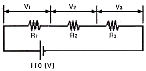
- 30[V]
- 33[V]
- 67[V]
- 110[V]
(정답률: 66%)
65. 실효값이 120[V]인 교류 정현파의 최대값은?
- √2×120[V]
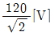
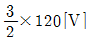
- 1.11×120[V]
(정답률: 53%)
66. 정전용량이 30[㎌]인 콘덴서와 20[㎌]인 콘덴서를 병렬로 접속하였을 때, a, b 양단간의 합성정전용량은?
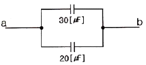
- 10[㎌]
- 12[㎌]
- 30[㎌]
- 50[㎌]
(정답률: 53%)
67. 어떤 저항에 100[V]의 전압을 가하여 10[A]의 전류가 흘렀다. 95[V]의 전압을 가하면 몇 [A]의 전류가 흐르는가?
- 5.5[V]
- 9.5[V]
- 12.5[V]
- 15.5[V]
(정답률: 81%)
68. 건축설비에서 사용되는 농형 유도전동기에 관한 설명으로 옳지 않은 것은?
- 슬립링이 없기 때문에 불꽃의 염려가 없다.
- 권선형 유도전동기에 비하여 구조가 간단하여 취급이 용이하다.
- 기동전류가 커서 전동기 권선을 과열시키거나 전원 전압의 변동을 일으킬 수 있다.
- 속도제어 방법으로 전자커플링제어, 극수제어가 주로 사용되며 VVVF방식은 사용할 수 없다.
(정답률: 67%)
69. 축전지의 자기방전량만을 미세한 전류로 지속적으로 충전을 행하는 방식을 무엇이라 하는가?
- 세류충전
- 급속충전
- 균등충전
- 보통충전
(정답률: 69%)
70. 변압기의 1차 코일 회수가 120회, 2차 코일 회수가 480회 일 때, 2차 코일 측의 전압이 100[V] 이면 1차 전압은 몇 [V]인가?
- 10
- 15
- 25
- 50
(정답률: 73%)
71. 변압기에서 철심(core)이 하는 역할은?
- 자속의 이동통로
- 전류의 이동통로
- 전압의 이동통로
- 와류의 이동통로
(정답률: 77%)
72. 자동화재탐지설비 중 연기감지기는 벽 또는 보로부터 최소 얼마 이상 떨어진 곳에 설치하여야 하는가?
- 0.3[m]
- 0.4[m]
- 0.6[m]
- 1.2[m]
(정답률: 44%)
73. 굴곡 장소가 많아서 금속관에 의하여 공사하기 어려운 경우, 금속관 공사나 금속덕트공사 등에 병용하여 부분적으로 이용되는 배선 공사 방법은?
- 목제 몰드공사
- 플로어 덕트공사
- 가요전선관 공사
- 애자사용 몰드공사
(정답률: 70%)
74. 다음 중 발광원리에 따라 광원을 분류할 경우 루미네선스에 의한 방전발광에 해당하지 않는 것은?
- 고압나트륨램프
- EL램프
- 크세논램프
- 고압수은램프
(정답률: 57%)
75. 제3종 접지공사가 필요한 곳은?
- 고압계기용 변압기의 2차측 전로
- 특별고압계기용 변압기의 2차측 전로
- 400[V] 이상의 금속관 배선에 사용되는 관
- 고압전로에 시설하는 피뢰기 및 방출 보호통
(정답률: 62%)
76. 자동화재탐지설비에서 부착높이에 따른 설치 감지기의 종류가 옳지 않게 연결된 것은?(단, 감지기별 부착높이 등에 대하여 별도로 형식승인을 받지 않은 경우)
- 4m 미만 - 보상식 스포트형
- 4m 이상 8m 미만 - 불꽃 감지기
- 8m 이상 15m 미만 - 차동식 분포형
- 15m 이상 20m 미만 - 이온화식 2종
(정답률: 49%)
77. 다음의 ( )안에 알맞은 용어는?
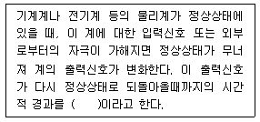
- 과도응답
- 정상응답
- 선형응답
- 시간응답
(정답률: 53%)
78. 다음 중 비례적분미분(PID)제어동작으로 제어한 결과 시스템이 불안정하고 진동하였을 경우 이에 대한 원인과 가장 거리가 먼 것은?
- 비례동작의 비례대가 매우 좁다.
- 낭비시간(dead time)이 매우 짧다.
- 미분동작의 미분시간이 매우 길다.
- 적분동작의 적분시간이 매우 짧다.
(정답률: 63%)
79. 유접점 시퀀스 제어 회로의 일반적인 특징에 관한 설명으로 옳지 않은 것은?
- 소비전력이 비교적 크다.
- 전기적 노이즈(외란)에 대하여 안정적이다.
- 기계적 진동에 강하며 개폐부하의 용량이 작다.
- 독립된 다수의 출력회로를 동시에 얻을 수 있다.
(정답률: 47%)
80. 건축설비 자동제어 중 피드백 제어방식을 제어동작에 의해 분류하였을 때 연속동작에 해당되지 않는 것은?
- 다위치동작
- 비례동작
- 적분동작
- 미분동작제
(정답률: 71%)
5과목: 건축설비관계법규
81. 옥상에 헬리포트를 설치하거나 헬리콥터를 통하여인명 등을 구조할 수 있는 공간을 확보하여야 하는 대상 건축물 기준으로 옳은 것은?(단, 건축물의 지붕을 평지붕으로 하는 경우)
- 11층 이상인 층의 바닥면적의 합계가 3000m2 이상인 건축물
- 11층 이상인 층의 바닥면적의 합계가 5000m2 이상인 건축물
- 11층 이상인 층의 바닥면적의 합계가 10000m2 이상인 건축물
- 11층 이상인 층의 바닥면적의 합계가 15000m2 이상인 건축물
(정답률: 76%)
82. 건축법령상 숙박시설에 해당하지 않는 것은?
- 여인숙
- 요양병원
- 관광호텔
- 휴양 콘도미니엄
(정답률: 85%)
83. 다음은 옥상광장의 설치에 관한 기준 내용이다. ( )안에 해당되지 않는 것은?
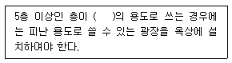
- 업무시설
- 종교시설
- 판매시설
- 장례식장
(정답률: 69%)
84. 특별피난계단 및 비상용 승강기의 승강장에 설치하는 배연설비의 구조에 관한 기준 내용으로 옳지 않은 것은?
- 배연기에는 예비전원을 설치할 것
- 배연구 및 배연풍도는 불연재료로 할 것
- 배연구가 외기에 접하지 아니하는 경우에는 배연기를 설치할 것
- 배연구는 평상시에는 열린 상태를 유지하고, 닫힌 경우에는 배연에 의한 기류로 인하여 열리지 않도록 할 것
(정답률: 80%)
85. 건축물에 가스, 급수, 배수, 환기, 난방 등의 건축 설비를 설치하는 경우 건축기계설비기술사 또는 공조냉동기계기술사의 협력을 받아야 하는 대상 건축물에 해당하지 않는 것은?
- 공동주택 중 연립주택
- 숙박시설로서 그 용도에 사용되는 바닥면적의 합계가 2000m2인 건축물
- 의료시설로서 그 용도에 사용되는 바닥면적의 합계가 2000m2인 건축물
- 교육연구시설 중 연구소로서 그 용도에 사용되는 바닥 면적의 합계가 2000m2인 건축물
(정답률: 46%)
86. 건축물의 설비기준 등에 관한 규칙에 따라 피뢰설비를 설치하여야 하는 대상 건축물의 높이 기준은?
- 10m 이상
- 20m 이상
- 30m 이상
- 40m 이상
(정답률: 78%)
87. 특별피난계단의 구조에 관한 기준 내용으로 옳지 않은 것은?
- 계단실 및 부속실의 실내에 접하는 부분은 불연재료로 할 것
- 계단은 내화구조로 하되, 피난층 또는 지상까지 직접 연결되도록 할 것
- 출입구의 유효너비는 최소 1.2m 이상으로 하고 피난의 방향으로 열 수 있을 것
- 노대 및 부속실에는 계단실외의 건축물의 내부와 접하는 창문등(출입구를 제외)을 설치하지 아니할 것
(정답률: 62%)
88. 각 층의 거실면적의 합계가 1000m2로 동일한 15층의 문화 및 집회시설 중 공연장에 설치하여야 하는 승용승강기의 최소 대수는? (단, 15인승 승강기의 경우)
- 5대
- 6대
- 7대
- 8대
(정답률: 63%)
89. 건축물의 3층 이상인 층(피난층은 제외)으로서 직통계단 외에 그 층으로부터 지상으로 통하는 옥외피난 계단을 따로 설치하여야 하는 대상 층에 해당하지 않는 것은?
- 위락시설 중 주점영업의 용도로 쓰는 층으로서 그 층 거실의 바닥면적의 합계가 1000m2인 것
- 문화 및 집회시설 중 공연장의 용도로 쓰는 층으로서 그 층 거실의 바닥면적의 합계가 1000m2인 것
- 문화 및 집회시설 중 집회장의 용도로 쓰는 층으로서 그 층 거실의 바닥면적의 합계가 1000m2인 것
- 문화 및 집회시설 중 전시장의 용도로 쓰는 층으로서 그 층 거실의 바닥면적의 합계가 1000m2인 것
(정답률: 59%)
90. 다음은 건축물의 에너지절약설계기준상의 용어의 정의이다. ( )안에 알맞은 것은?
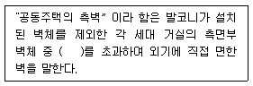
- 1m
- 2m
- 3m
- 4m
(정답률: 41%)
91. 기계환기설비를 설치하여야 하는 다중이용시설에 해당하는 것은?
- 의료시설 중 연면적이 2000m2인 의료기관
- 문화 및 집회시설 중 연면적이 2000m2인 미술관
- 문화 및 집회시설 중 연면적이 2000m2인 박물관
- 교육연구 복지시설 중 연면적이 2000m2인 도서관
(정답률: 77%)
92. 바닥과 그 바닥으로부터 높이 1m까지의 안벽의 마감을 내수재료로 하여야 하는 대상에 해당하지 않는 것은?
- 숙박시설의 욕실
- 운동시설 중 수영장
- 제1종 근린생활시설 중 휴게음식점의 조리장
- 제2종 근린생활시설 중 일반음식점의 조리장
(정답률: 68%)
93. 계단을 대체하여 설치하는 경사로의 경사도는 최대 얼마를 넘지 않도록 하여야 하는가?
- 1:4
- 1:8
- 1:12
- 1:16
(정답률: 65%)
94. 연면적이 500m2인 오피스텔에 설치하는 복도의 유효너비는 최소 얼마 이상으로 하여야 하는가? (단, 양옆에 거실이 있는 복도의 경우)
- 1.2m
- 1.5m
- 1.8m
- 2.4m
(정답률: 70%)
95. 전층에 주방용자동소화장치를 설치하여야 하는 특정소방 대상물은?
- 아파트
- 기숙사
- 일반음식점
- 휴게음식점
(정답률: 81%)
96. 건축물의 용도변경과 관련된 시설군 중 영업시설 군에 해당하지 않는 것은?
- 판매시설
- 운동시설
- 숙박시설
- 업무시설
(정답률: 67%)
97. 업무시설로서 건축허가등을 함에 있어서 미리 소방본부장 또는 소방서장의 동의를 받아야 하는 대상 건축물의 연멱적 기준은?
- 연면적이 200m2 이상인 건축물
- 연면적이 300m2 이상인 건축물
- 연면적이 400m2 이상인 건축물
- 연면적이 500m2 이상인 건축물
(정답률: 47%)
98. 다음의 소방시설 중 소화설비에 해당되지 않는 것은?
- 소화용수설비
- 스프링클러설비
- 옥외소화전설비
- 자동확산소화장치
(정답률: 57%)
99. 판매시설의 경우, 전층에 스프링클러설비를 설치하여야 하는 특정소방대상물 기준으로 옳은 것은?(단, 층수가 4층 이상인 건축물의 경우)
- 바닥면적 합계가 1000m2 이상인 것
- 바닥면적 합계가 5000m2 이상인 것
- 바닥면적 합계가 10000m2 이상인 것
- 바닥면적 합계가 15000m2 이상인 것
(정답률: 60%)
100. 건축물의 냉방설비에 대한 설치 및 설계기준에 정의된 심야시간으로 옳은 것은?
- 22:00부터 익일 07:00까지
- 23:00부터 익일 07:00까지
- 22:00부터 익일 09:00까지
- 23:00부터 익일 09:00까지
(정답률: 54%)